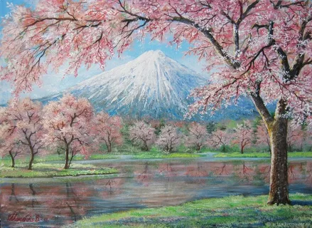

Наше любимое время года весна, а именно весна в Японии. Самое лучше в это время это апрельское цветение сакуры. Мы мечтаем увидеть это в живую. Однажды мы слетаем туда.
Весна у нас ассоциируется с началом жизни или с приходом радости в неё. В мае часто готовят шашлыки и самое приятное в ожидание лета.